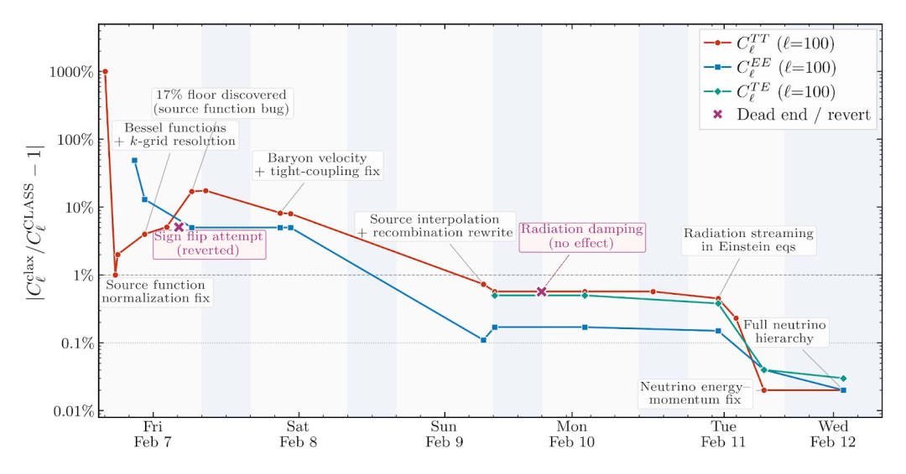

✅点击上方🔺公众号🔺关注我✅
今天看了 Anthropic 一篇文章，很是受到触动。文章链接放在结尾了，大家有需要可以看下原文。
现在大家聊起Agent，都在聊多Agent团队协作完成任务。而这篇 long-running Claude 想讲的，恰恰是另一件事：不是所有任务都适合多 Agents。
有些任务，最怕的不是人手不够，而是上下文断掉。
Anthropic 这次拿了一个很硬核的案例来说明这件事：当任务强耦合、错误会一路累积时，单 Agent 长跑，往往比多 Agent 并行更对路。
这篇文章真正想讲什么？
很多人看到标题，会先被“scientific computing”吸走注意力，以为重点是 Claude 又做了个科研 demo。
不是。
Anthropic 官方推文其实已经把核心说得很明白：模型在 long-horizon tasks 上确实越来越强，但 splitting work across many agents doesn’t suit every problem。
这才是全文中心。
他们拿来举例的任务，是早期宇宙建模里的玻尔兹曼求解器。这个例子很硬，但并不妨碍普通开发者理解它要证明什么：
有些任务不是不能拆，而是拆了反而更容易做歪。
因为这类任务前后依赖太重。前面一个近似错了，后面整条链都会偏；某个数值处理不对，最终结果也会一起跑偏。你把这种任务切给很多 Agents，看上去像是在加速，实际上很可能是在放大协调成本和排错难度。
为什么这类任务不适合多 Agents？
我觉得这里最值得记住的，不是那个宇宙学名词，而是任务结构。
这类任务通常有几个共同点：
- 前后强耦合：不是几个独立模块拼起来，而是一条连续链路
- 错误会累积：前面的小错，后面会被放大
- 排错要追因果：不是“哪块没做完”，而是“哪一步开始歪了”
- 需要连续上下文：不能隔几步就把思路切断，再指望后面无损接回去
Anthropic 对这种任务的判断很直接：比起一开始就上多 Agent 并行，更适合让一个 Agent 顺着问题链往下走，必要时再叫子 Agent 帮忙。
这点其实挺反直觉，但很合理。
多 Agent 最擅长的，是把任务拆成很多边界清楚、结果容易合并的小块；单 Agent 更擅长的，是守住一条不断线的推理链。前者像多人流水线，后者像一个人盯着一张复杂地图慢慢往前走。
最能说明问题的，是这张图
Anthropic 文里最值得放出来的，是这张误差收敛图。

横轴是连续推进的时间，纵轴是相对参考实现
CLASS的误差。几条曲线一路往下掉，说明 Claude 不是只做出一个版本就停，而是在持续修、持续对齐、持续逼近目标。
这张图的意思很硬，但不难懂。
一开始误差很高，中间也有走弯路的时候，但整体趋势很清楚：它不是把任务拆散后同时开工，而是顺着同一条链慢慢把误差压下去。对这种任务来说，连续性本身就是生产力。
这也是为什么 Anthropic 明说：不是所有长任务都适合多 Agent。
他们给出的，不是观点，是一套工作流
这篇文章真正有用的地方，在于它没停留在观点上，而是把“单 Agent 长跑”怎么落地讲得很具体。
核心脚手架大概有这几样：
1. CLAUDE.md
先把目标、边界、精度要求、交付标准写清楚。
这一步看起来老派，但很关键。长任务最怕边做边飘，前面没把目标钉住，后面很容易忙了半天却没打中靶。
2. CHANGELOG.md
把它当长期记忆和实验日志。
不只是记“做了什么”，还要记：
- 哪些尝试失败了
- 为什么失败
- 当前误差到了哪里
- 还剩哪些已知问题
没有这份记录，下一轮 session 很容易把老坑再踩一遍。
3. test oracle
这一点尤其重要。
长时间自动工作，不能只靠“看起来像在进展”。必须有一个持续验证的基准。在这个例子里，Claude 会一直拿参考实现 CLASS 做对照，反复跑测试、扩测试、看偏差。
没有 oracle，再强的模型也可能只是在很认真地往错方向狂奔。
4. Git + tmux + 长时间运行环境
Anthropic 这篇里最现实的一点，是它承认这种工作流不是聊十分钟就结束的。
他们把 Claude Code 放进 tmux，再丢进跑 SLURM 的 HPC 环境里，让它连续干几天。每完成一段有意义的工作就 commit / push，这样进度可见、结果可追、出错也能回滚。
5. Ralph loop
这个小东西看起来土，但很有用。
它的作用很简单：当 Agent 声称“我做完了”时，再把它踢回去问一遍——真的做完了吗？做到标准了吗？
对长任务来说，这比很多华丽的 orchestration 都实在。
这对普通开发者有什么用？
我觉得用处很大。
因为 Anthropic 讲的表面上是科学计算，底下其实是在讲一类更普遍的任务：
- 大型旧代码迁移
- 强依赖链的数据管线排错
- 跟参考实现做 feature parity
- 数值模拟或量化研究代码验证
- 一条链很长、错误会逐步放大的工程任务
如果你手上的任务符合这些特征，那你优先该想的，不是“要不要再开几个 Agent”，而是：
- 怎么保证上下文不断
- 怎么把失败路线记下来
- 怎么持续验证它是不是离目标更近了
- 怎么让它在一个可连续运行的环境里慢慢逼近答案
很多时候，真正稀缺的不是并行度，而是连续性。
那多 Agents 还重要吗？
当然重要。
Anthropic 这篇不是在反对多 Agents，而是在纠正一个越来越常见的幻觉：多 Agent 不是默认答案。
多 Agent 更适合这些场景：
- 任务边界清楚
- 子任务之间相对独立
- 结果容易合并
- 成败标准明确
- 协调成本低于并行收益
比如批量信息搜集、明确切块的页面生成、章节化文档整理、独立模块重构，这些都很适合多 Agent。
但一旦任务变成“上下文不能断、错误会累积、排错要追整条因果链”，单 Agent 往往更稳。
最后一句
我觉得 Anthropic 这篇最重要的价值，不是又证明了 Claude 很强，而是把一个很容易被说反的问题讲明白了：
选工作流，先看任务结构，再看 Agent 数量。
对一类高耦合任务来说，真正该优化的从来不是“再多叫几个 Agent”，而是连续性、记忆、验证和回路。
多 Agent 不是万能解。对有些任务来说，最怕的不是人手不够，而是上下文断掉。
参考链接
- Long-running Claude for scientific computing：https://www.anthropic.com/research/long-running-Claude
如果觉得这篇文章有帮助，欢迎点赞、在看、转发！有问题也可以在评论区留言，我会尽量回复！